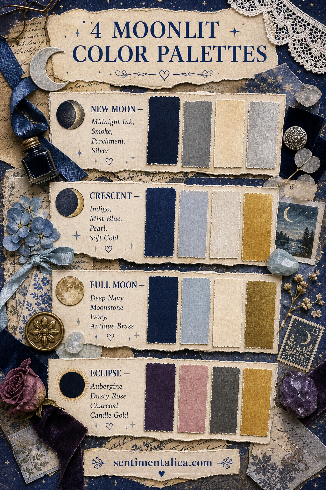
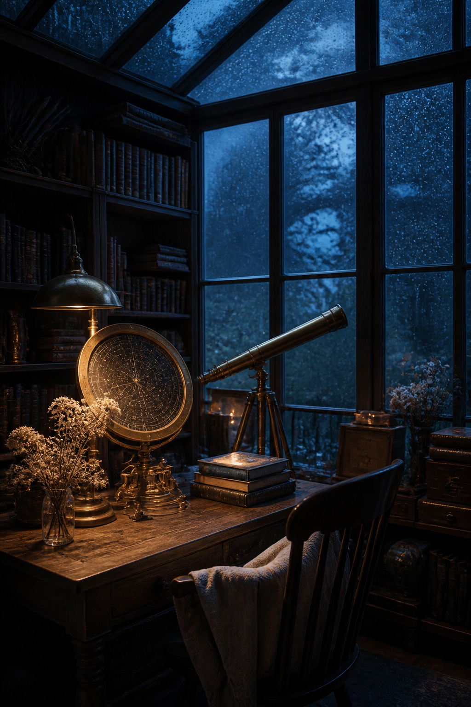

Moonlit pages become muddy when every color is dark and mysterious. A useful night palette needs contrast: one deep anchor, one true light, one atmospheric middle, and one accent that behaves like a glint.

New Moon: quiet and nearly monochrome
Use midnight ink for the largest dark shape, smoke for soft transitions, parchment for writing space, and silver for one narrow detail. This palette suits private entries, hidden pockets, black-and-white photographs, and pages about beginnings that are not ready to be announced.
Keep parchment visible across at least half the spread. Without it, navy and grey lose their difference. Silver should appear once or twice: a thread, star, paper edge, or tiny handwritten date.
Crescent: cool, hopeful, and delicate
Indigo gives the page depth; mist blue and pearl keep it airy; soft gold introduces warmth. This is the easiest palette for celestial pages that should feel romantic rather than gothic. Try a pearl base, an indigo torn strip, a translucent mist-blue layer, and one gold crescent.

Full Moon: luminous and classic
Deep navy, moonstone blue, ivory, and antique brass create the clearest light-dark contrast. Make ivory the hero. Let it appear as a large torn circle, pale photograph mat, or generous writing panel. Navy can frame the edges while moonstone bridges the two values.
Antique brass is warmer and softer than bright yellow gold. Use it for an eyelet, old button, narrow border, or seal. If the page begins to feel formal, introduce a frayed linen thread.
Eclipse: mysterious with a romantic undertone
Aubergine and charcoal create the shadow; dusty rose prevents the palette from becoming severe; candle gold supplies the glow. This combination works well for secret letters, dream notes, theatre tickets, dried roses, and stories set after dark.
Keep aubergine and charcoal apart with cream or dusty rose. When two dark colors touch everywhere, their distinction disappears. One soft middle tone makes both shadows look intentional.
How to choose among the four
- Choose New Moon for restraint and privacy.
- Choose Crescent for tenderness and new possibilities.
- Choose Full Moon for clarity, contrast, and classic celestial details.
- Choose Eclipse for drama softened by romance.
Test the values before adding decoration
Photograph your scraps in black and white. You should see one unmistakable dark, one light, and at least one middle value. If everything becomes the same grey, exchange one paper before gluing. This small test matters more than matching exact color names because value is what keeps writing, photographs, and layered edges readable.
Repeat color with different textures
A palette looks richer when the same hue appears as matte paper, translucent vellum, thread, and ink rather than four identical cardstock shapes. Try navy as a torn base and a thin ribbon; use ivory as both writing paper and lace. The repetition creates harmony while the materials keep the spread tactile.
For a series, choose one palette per page and carry a single neutral through all four. Ivory or parchment can become the constant while the moon phase changes the shadows and accent. The finished sequence will feel related without looking copied.
Before gluing, place your four colors on the table and remove anything that does not belong. A moonlit page does not need purple, blue, black, silver, and gold all at once. Limitation is what lets the light show.
Explore more journal color studies for calm, layered pages.